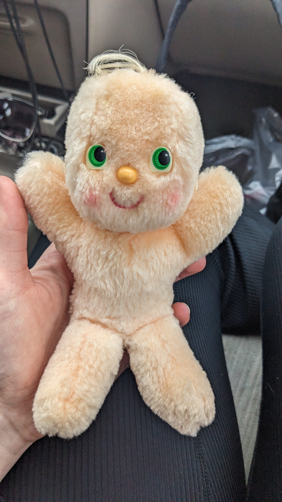

My mind has settled significantly overnight. The ability to recognize when my mind is stirring, and to know it will pass in a matter of days, is a relief. Wish I learned this sooner, but glad I learned it now, since I have quite a bit to deal with mentally.
I've come to the cafe that I frequented in the past. I had grown quite close to one of the regulars. We dated for about three months. The split had quite an effect on me. I have a notebook filled with unsent love letters to this undeserving man, My how I've grown. He would come in here every morning. As would I, even after we split. How embarassing.
Thankfully he is not here. I still took his favorite spot.
I saw him a few weeks ago on my walk to the library. I used to pass his place everyday on my walk to and from work. He crossed the street when he noticed me.
I don't like this phenomen of building an intimate relationship with someone only to end up as strangers. It is depressing. This man in particular reignited my interest in classical literature. He introduced me to Steely Dan, He wasn't very kind to me, but I can thank him for this.
Our end began my dating aversion.
The gregarious old man is here.
Blaming my lovergirl disposition on the music I listened to in middle school and early high school. Specifically From Under the Cork Tree. Album holds up well 20 years later.
This reflection stuff kinda dumb. I wasn't writing anything worthwhile a year ago. Going lessen my commitmment to this idea.
Messed around with the CSS today. So things aren't looking great. I'll fix it sooner or later.
System of a Down and Drowning Pool playing at the cafe.
Writing in second person is not fun. Feels too direct and commanding. First person personal pronouns can be avoided still.
Starting off the new year on a big Nine Inch Nails kick. Hand that Feeds is now playing.
Favoring aimless writing over productivity (reading, fixing this site, applying for jobs, planning my move)

Peace is knowing in a day or two your mind will calm. I will make the most of it until then.
Tonight confirms that the worst is over. Your hair is cute, finally.
I have a strange habit of photographing books when I read something interesting. Always planning to use them in some way, but never doing so.
Atleast I have created a collection for them
No desire to organize or add more info at the moment. Maybe some day. But for now, you can figure it out. Didn't even bother to review the photos. The Google Photos query was "book pages" and this is what it gave me. I took more tonight but they haven't appeared yet.
lamo the first one is from War of the Worlds. Can't wait to read that and Frankenstein again this fall.
Watched Pumping Iron last night. One of my most watched movies. Up there with Aguirre. Started Fitzcarlado. Slightly embarassed that this is only the second Herzog film I've seen. I really should watch more. May be my favorite director. I also love Klaus Kinski.
Wait nevermind, I've see Even Dwarfs Started Small. I tend to confuse this movie with Freaks. I remember watching this during a stay at the psych ward. Eating rubbery scrambled eggs. Listening to the stories told by the janitor from the very high school I attended some years prior. I think he drew a picture for me. I could also hear the steps of the quiet stern bald man pacing up and down the hall. And the screams of a newly admitted young man. We befriended each other while completing a puzzle. Moreso I watched him complete it, he was a very skilled...puzzler?
I wanted to link an epub or pdf of "Spurs" by Tod Robbins. Freaks was based on this short story, and it is very good. Internet connection is weak tonight/ So another time
Enojyed the beef shank curry I made the previous evening, even if it was a bit too salty.
Cafe, spin class, pilates class. Coffee at a friend's place northwest. We found ourselves discussing my attraction to robots (I like animatronic Abe Lincoln)
Ended with a nonsense ramble about coding as an art. I have the right idea, but didn't articulate it elequontly. I am still workinging on this today. I just need to read more. Memorize lines from novels.
You're back.
You need to fix this.
Your visit was enjoyable.
You have a decision to make.
Assuaged expectations. Not to be exceeded or subceeded. Worked in your favor.
You appriciate the stillness of home. Sadly your mind wanders a bit too far in the charmingly dull environment. Temporal stillness is scant in the city, but commotion eases the mind.
You've done well in practicing mindfulness. You bring this with you to whet the dull.
You did a decent amount of writing while home. You spent a night watching music videos from the bands you loved in middle school. You mused about the member of each band that you thought was "hot". Then you went on a tangent about the first time you saw a penis. It was Pete Wentz's. You were in seventh grade. Confused, curious, and a little repulsed. You prefer to not dwell on this.
Your attention now turned to the sand. You've always come back to him. Perhaps significant, but do not wrap your mind around it.
You install Linux Mint on the refurbished ThinkPad you bought with your Christmas money. You want to rebuild your music library. Only Nine Inch Nails and Fall Out Boy. You add albums when desired.
Your old iPod Touch works, but you haven't found a way to add new music to it. For now, it is an eclectic mix of songs you liked in 2012. At least there isThe Downward Spiral. Not bad taste thirteen years ago.
Weed and yoga is the plan for tonight. Tomorrow's plan: work at cafe (you have a 2025 reflection, don't forget), visit bar friends, feed yourself at some point.
A friend's advice may lead to a short hometown visit at the end of the month.
Began to leave phone outside the bedroom. That didn't last. I expanded on my wardrobe philosophy. I have been able to simplify my wardrobe with higher quality pieces, but there is still more to be done.
I listened to Pet Sounds and the entire core Beatles discography. Cooked a beef shank at 8pm. Mended a skirt.
"Life is weird when you're living with a bloated artery in your neck."